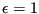

Next: Seepage under a dam Up: Simple example problems Previous: Frequency calculation of a Contents
This problem involves a thermal calculation of the furnace depicted in
Figure 14. The furnace consists of a bottom plate at a temperature
, which is prescribed. It changes linearly in an extremely short time from
300 K to 1000 K after which it remains constant. The side walls of the furnace
are isolated from the outer world, but exchange heat through radiation with
the other walls of the furnace. The emissivity of the side walls and bottom
is
. The top of the furnace exchanges heat through radiation with
the other walls and with the environmental temperature which is fixed at 300
K. The emissivity of the top is
 . Furthermore, the top exchanges
heat through convection with a fluid (air) moving at the constant rate of
0.001 kg/s. The temperature of the fluid at the right upper corner is 300
K. The walls of the oven are made of 10 cm steel. The material
constants for steels are: heat conductivity
,
specific
heat
and density
. The material
constants for
air are : specific heat
and density
. The
convection coefficient is
. The dimensions of the furnace
are
. Furthermore, the top exchanges
heat through convection with a fluid (air) moving at the constant rate of
0.001 kg/s. The temperature of the fluid at the right upper corner is 300
K. The walls of the oven are made of 10 cm steel. The material
constants for steels are: heat conductivity
,
specific
heat
and density
. The material
constants for
air are : specific heat
and density
. The
convection coefficient is
. The dimensions of the furnace
are
 (cube). At all parts are at
. We would like to know the temperature at locations A,B,C,D and E as a
function of time.
(cube). At all parts are at
. We would like to know the temperature at locations A,B,C,D and E as a
function of time.
**
** Structure: furnace.
** Test objective: shell elements with convection and radiation.
**
*NODE, NSET=Nall
1, 3.00000e-01, 3.72529e-09, 3.72529e-09
...
*ELEMENT, TYPE=S6, ELSET=furnace
1, 1, 2, 3, 4, 5, 6
...
*ELEMENT,TYPE=D,ELSET=EGAS
301,603,609,604
...
*NSET,NSET=NGAS,GENERATE
603,608
*NSET,NSET=Ndown
1,
...
*PHYSICAL CONSTANTS,ABSOLUTE ZERO=0.,STEFAN BOLTZMANN=5.669E-8
*MATERIAL,NAME=STEEL
*DENSITY
7800.
*CONDUCTIVITY
50.
*SPECIFIC HEAT
446.
*SHELL SECTION,ELSET=furnace,MATERIAL=STEEL
0.01
*MATERIAL,NAME=GAS
*DENSITY
1.
*SPECIFIC HEAT
1000.
*FLUID SECTION,ELSET=EGAS,MATERIAL=GAS
*INITIAL CONDITIONS,TYPE=TEMPERATURE
Nall,300.
*AMPLITUDE,NAME=A1
0.,.3,1.,1.
*STEP,INC=100
*HEAT TRANSFER
0.1,1.
*VIEWFACTOR,WRITE
*BOUNDARY,AMPLITUDE=A1
Ndown,11,11,1000.
*BOUNDARY
603,11,11,300.
*BOUNDARY,MASS FLOW
609,1,1,0.001
...
*RADIATE
** Radiate based on down
1, R1CR,1000., 1.000000e+00
...
** Radiate based on top
51, R1CR,1000., 8.000000e-01
...
** Radiate based on side
101, R1CR,1000., 1.000000e+00
...
** Radiate based on top
51, R2,300., 8.000000e-01
...
*FILM
51, F2FC, 604, 2.500000e+01
...
*NODE FILE
NT
*NODE PRINT,NSET=NGAS
NT
*END STEP
The input deck is listed above. It starts with the node definitions. The highest node number in the structure is 602. The nodes 603 up to 608 are fluid nodes, i.e. in the fluid extra nodes were defined (z=0.3 corresponds with the top of the furnace, z=0 with the bottom). Fluid node 603 corresponds to the location where the fluid temperature is 300 K (“inlet”), node 608 corresponds to the “outlet”, the other nodes are located in between. The coordinates of the fluid nodes actually do not enter the calculations. Only the convective definitions with the keyword *FILM govern the exchange between furnace and fluid. With the *ELEMENT card the 6-node shell elements making up the furnace walls are defined. Furthermore, the fluid nodes are also assigned to elements (element type D), so-called network elements. These elements are needed for the assignment of material properties to the fluid. Indeed, traditionally material properties are assigned to elements and not to nodes. Each network element consists of two end nodes, in which the temperature is unknown, and a midside node, which is used to define the mass flow rate through the element. The fluid nodes 603 up to 613 are assigned to the network elements 301 up to 305.
Next, two node sets are defined: GAS contains all fluid nodes, Ndown contains all nodes on the bottom of the furnace.
The *PHYSICAL CONSTANTS card is needed in those analyses in which radiation plays a role. It defines absolute zero, here 0 since we work in Kelvin, and the Stefan Boltzmann constant. In the present input deck SI units are used throughout.
Next, the material constants for STEEL are defined. For thermal analyses the conductivity, specific heat and density must be defined. The *SHELL SECTION card assigns the STEEL material to the element set FURNACE, defined by the *ELEMENT statement before. It contains all elements belonging to the furnace. Furthermore, a thickness of 0.01 m is assigned.
The material constants for material GAS consist of the density and the specific heat. These are the constants for the fluid. Conduction in the fluid is not considered. The material GAS is assigned to element set EGAS containing all network elements.
The *INITIAL CONDITIONS card defines an initial temperature of 300 K for all nodes, i.e. furnace nodes AND fluid nodes. The *AMPLITUDE card defines a ramp function starting at 0.3 at 0.0 and increasing linearly to 1.0 at 1.0. It will be used to define the temperature boundary conditions at the bottom of the furnace. This ends the model definition.
The first step describes the linear increase of the temperature boundary condition between and . The INC=100 parameter on the *STEP card allows for 100 increments in this step. The procedure is *HEAT TRANSFER, i.e. we would like to perform a purely thermal analysis: the only unknowns are the temperature and there are no mechanical unknowns (e.g. displacements). The step time is 1., the initial increment size is 0.1. Both appear on the line underneath the *HEAT TRANSFER card. The absence of the parameter STEADY STATE on the *HEAT TRANSFER card indicates that this is a transient analysis.
Next come the temperature boundary conditions: the bottom plate of the furnace is kept at 1000 K, but is modulated by amplitude A1. The result is that the temperature boundary condition starts at 0.3 x 1000 = 300K and increases linearly to reach 1000 K at t=1 s. The second boundary conditions specifies that the temperature of (fluid) node 603 is kept at 300 K. This is the inlet temperature. Notice that “11” is the temperature degree of freedom.
The mass flow rate in the fluid is defined with the *BOUNDARY card applied to the first degree of freedom of the midside nodes of the network elements. The first line tells us that the mass flow rate in (fluid)node 609 is 0.001. Node 609 is the midside node of network element 301. Since this rate is positive the fluid flows from node 603 towards node 604, i.e. from the first node of network element 301 to the third node. The user must assure conservation of mass (this is actually also checked by the program).
The first set of radiation boundary conditions specifies that the top face of the bottom of the furnace radiates through cavity radiation with an emissivity of 1 and an environment temperature of 1000 K. For cavity radiation the environment temperature is used in case the viewfactor at some location does not amount to 1. What is short of 1 radiates towards the environment. The first number in each line is the element, the number in the label (the second entry in each line) is the face of the element exposed to radiation. In general, these lines are generated automatically in cgx (CalculiX GraphiX).
The second and third block define the internal cavity radiation in the furnace for the top and the sides. The fourth block defines the radiation of the top face of the top plate of the furnace towards the environment, which is kept at 300 K. The emissivity of the top plate is 0.8.
Next come the film conditions. Forced convection is defined for the top face of the top plate of the furnace with a convection coefficient . The first line underneath the *FILM keyword indicates that the second face of element 51 interacts through forced convection with (fluid)node 604. The last entry in this line is the convection coefficient. So for each face interacting with the fluid an appropriate fluid node must be specified with which the interaction takes place.
Finally, the *NODE FILE card makes sure that the temperature is stored in the .frd file and the *NODE PRINT card takes care that the fluid temperature is stored in the .dat file.
The complete input deck is part of the test examples of CalculiX (furnace.inp). For the present analysis a second step was appended keeping the bottom temperature constant for an additional 3000 seconds.
What happens during the calculation? The walls and top of the furnace heat up due to conduction in the walls and radiation from the bottom. However, the top of the furnace also loses heat through radiation with the environment and convection with the fluid. Due to the interaction with the fluid the temperature is asymmetric: at the inlet the fluid is cool and the furnace will lose more heat than at the outlet, where the temperature of the fluid is higher and the temperature difference with the furnace is smaller. So due to convection we expect a temperature increase from inlet to outlet. Due to conduction we expect a temperature minimum in the middle of the top. Both effects are superimposed. The temperature distribution at is shown in Figure 15. There is a temperature gradient from the bottom of the furnace towards the top. At the top the temperature is indeed not symmetric. This is also shown in Figure 16, where the temperature of locations A, B, C, D and E is plotted as a function of time.
Notice that steady state conditions have not been reached yet. Also note that 2D elements (such as shell elements) are automatically expanded into 3D elements with the right thickness. Therefore, the pictures, which were plotted from within CalculiX GraphiX, show 3D elements.